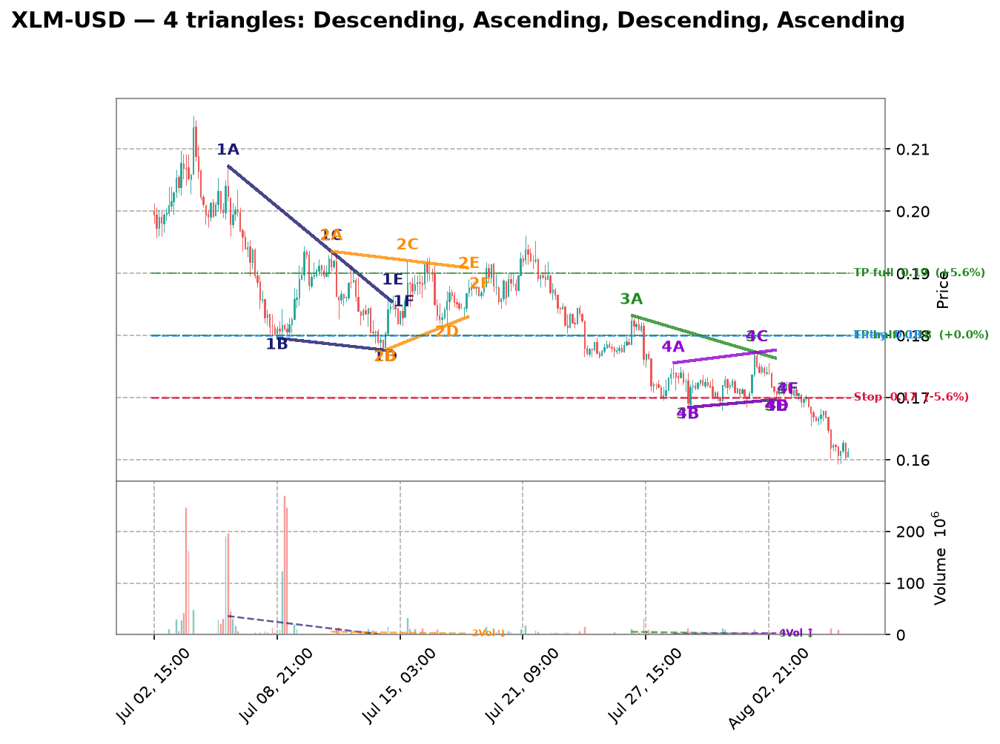
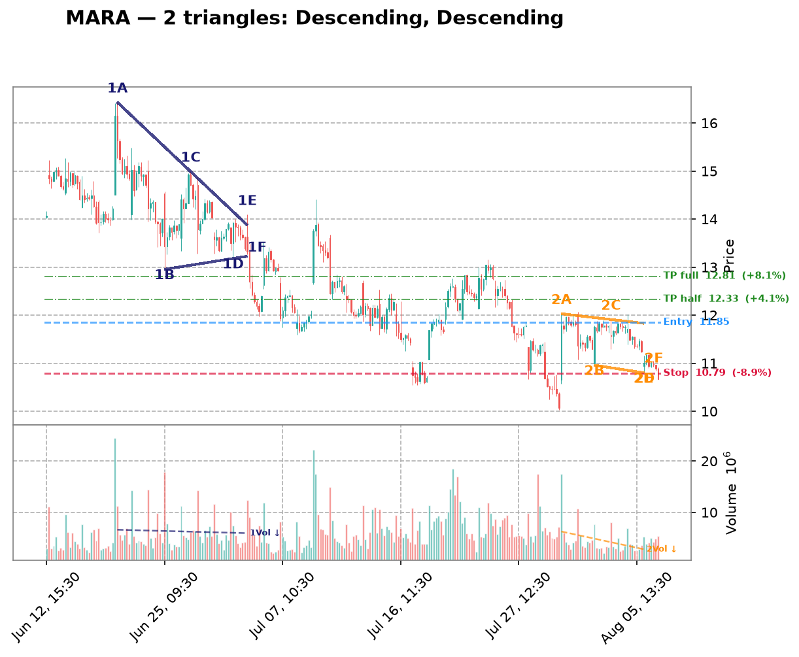
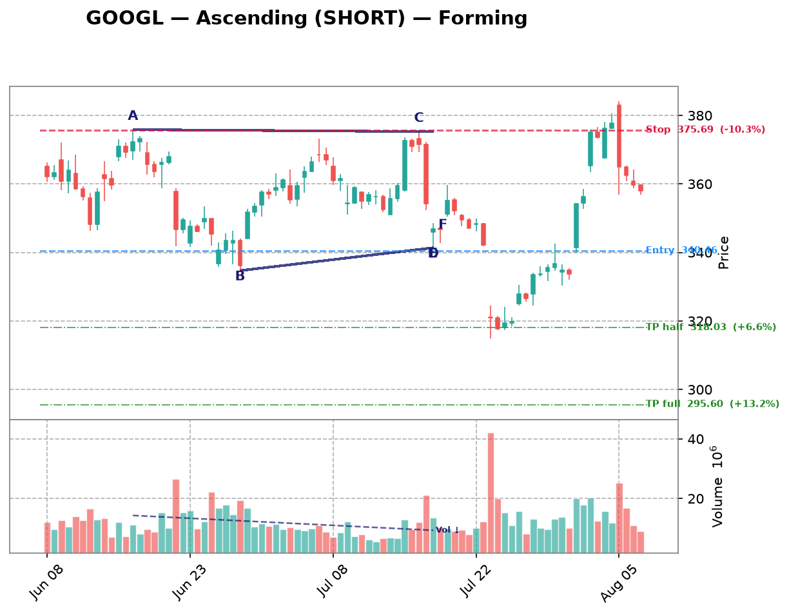
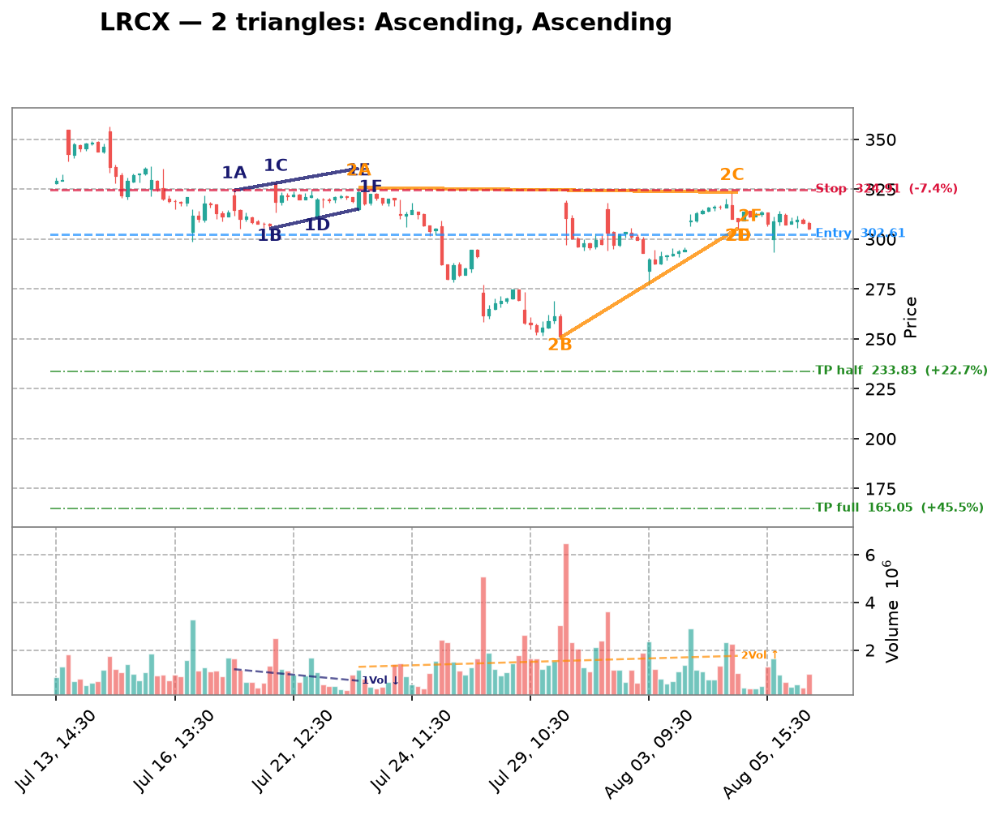
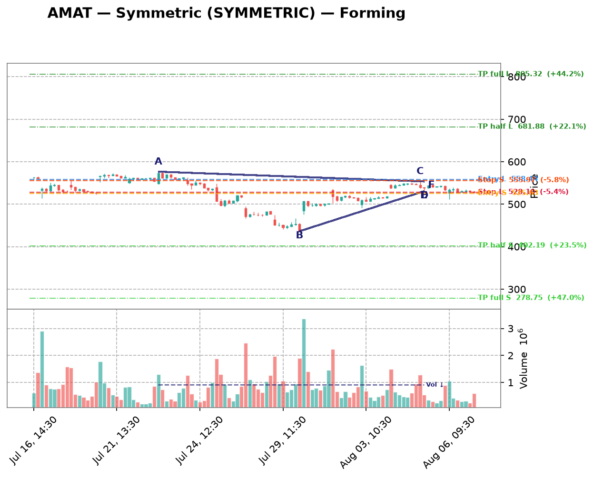
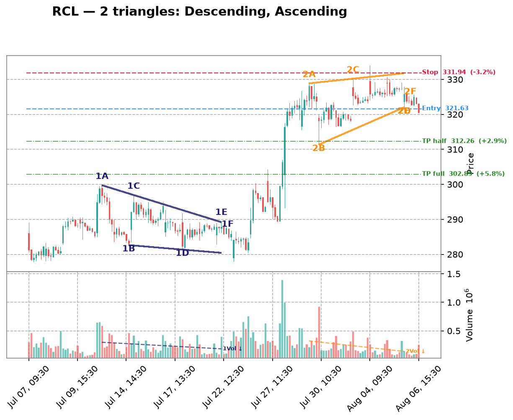

| Date | Symbol | TF | Pattern | Dir | Verdict | Claude Pattern | Claude Dir | Conf | Rec |
|---|---|---|---|---|---|---|---|---|---|
| crypto 10 patterns | |||||||||
| 2026-08-21 | DOGE-USD | 1d | Descending | LONG | Disputed | ? | ? | Certainty: 80 | — |
Chart  Claude Notes The right side of the chart (Jun-Aug) shows a clear, sustained downtrend flattening into a tight, low-volatility consolidation near 0.07, not a descending triangle. There's no clear descending upper trendline with distinct lower highs converging toward a flat support - instead price simply trended down steadily and then flattened out into a narrow range with very low volume, more consistent with a bottoming/basing pattern or exhaustion than an active triangle breakout setup. The algorithm likely mistook the general downtrend into a flat bottom as a descending triangle, but there aren't clean touch points forming two converging trendlines - the 'support' at ~0.069-0.07 is flat but there's no clear descending resistance line with multiple distinct lower-high touches converging into it. Price action looks more like a flag/basing consolidation after a downtrend. Presence certainty 80/100 — how sure Claude is that its found/not-found call is correct | |||||||||
| 2026-08-21 | XRP-USD | 1d | Descending | LONG | Disputed | ? | ? | Certainty: 78 | — |
Chart  Claude Notes The right side of the chart (Jun-Aug) shows a downtrend that flattens into a fairly tight horizontal range around 1.0-1.15, but there's no clear converging structure - both the highs and lows are roughly flat/choppy rather than showing a descending upper trendline meeting a flat support. This looks more like consolidation/sideways chop after a strong downtrend rather than a descending triangle. A descending triangle requires clear lower highs converging into a flat support line; here the recent highs (mid-Jun ~1.2, mid-Jul ~1.15) don't show a consistent stepped-down pattern, and the price action looks more like a rectangle/range-bound base than a converging triangle. I disagree with the algorithm's flag - insufficient clean touch points on a descending upper trendline. Presence certainty 78/100 — how sure Claude is that its found/not-found call is correct | |||||||||
| 2026-08-21 | VET-USD | 1d | Descending | LONG | Disputed | ? | ? | Certainty: 75 | — |
Chart  Claude Notes The right side of the chart (late Jun through Jul) shows price consolidating in a tight, roughly flat/horizontal range between ~0.0045 and ~0.005 with no clear converging trendlines - both highs and lows are essentially flat, not narrowing. This looks more like a flat consolidation/range-bound box after a sharp downtrend rather than a descending triangle, which requires a clearly declining upper resistance line with lower highs. The upper boundary here isn't descending - it's flat, and volatility isn't visibly compressing toward an apex. I disagree with the algorithm's descending triangle call; this is better described as sideways consolidation at support following a downtrend. Presence certainty 75/100 — how sure Claude is that its found/not-found call is correct | |||||||||
| 2026-08-21 | ETH-USD | 1d | Symmetric | SYMMETRIC | Disputed | ? | ? | Certainty: 75 | — |
Chart  Claude Notes The right side of the chart (mid-June through July) shows price basing and then trading in a tight, roughly flat/sideways range around 1850-1950 after a strong downtrend and recovery. There's no clear converging structure - highs and lows are both roughly flat, not converging toward an apex. This looks more like a flat consolidation/rectangle than a symmetric triangle. There aren't distinct rising lows and falling highs meeting at a point; instead price is oscillating in a narrow horizontal band with similar highs (~1950) and similar lows (~1850) repeated over many candles. I disagree with the algorithm's symmetric triangle call - this is better characterized as a flat consolidation range, not a converging wedge. Presence certainty 75/100 — how sure Claude is that its found/not-found call is correct | |||||||||
| 2026-08-21 | SOL-USD | 1d | Symmetric | SYMMETRIC | Both agree | Symmetric | SYMMETRIC | Quality: 45 | monitor |
Chart  Claude Notes From late June into July, SOL-USD shows a series of lower highs (~83, 80, 78, 77, 76) forming a mildly descending upper boundary, while the lows (~72-75) are roughly flat to slightly rising, creating a loose converging structure near the right edge. Touch points are somewhat imprecise (within 1-2 candles) and the range is fairly tight/choppy, making it hard to draw crisp trendlines. This leans more descending-triangle in shape but could be read as a shallow symmetric wedge given the slight upward drift in lows. Price is still contained within the range, not yet broken out. Confidence is moderate since the pattern is not textbook-clean and touch points are limited on the lower boundary. Symbol Research Solana (SOL) is a high-throughput layer-1 blockchain platform used for DeFi, NFTs, and payments, competing with Ethereum. It has seen renewed institutional interest via ETF filings and network activity growth, but remains sensitive to broader crypto liquidity cycles and regulatory news. Market Sentiment neutral Presence certainty 55/100 — how sure Claude is that its found/not-found call is correct Pattern quality 45/100 — how clean/tradable this specific triangle is Research confidence 55/100 — Phase B research conviction Supporting Signals
Opposing Signals
| |||||||||
| 2026-08-21 | MANA-USD | 4h | Ascending | SHORT | Disputed | ? | ? | Certainty: 80 | — |
Chart  Claude Notes The right side of the chart (late July through early August) shows price trading in a tight, flat, non-converging range roughly between 0.066 and 0.069 with no clear rising support or falling resistance. Highs and lows are essentially horizontal, resembling a rectangle/consolidation rather than a converging triangle. There's no evidence of higher lows compressing against a flat top (which would be needed for an ascending triangle) — lows are flat, not rising. The broader chart shows a downtrend from early July highs (~0.075) into this consolidation, but no clean two-line convergence is visible. I disagree with the algorithm's ascending triangle flag since the lower boundary isn't rising and the pattern looks more like sideways chop than a compressing wedge. Presence certainty 80/100 — how sure Claude is that its found/not-found call is correct | |||||||||
| 2026-08-21 | SAND-USD | 4h | Descending | LONG | Disputed | ? | ? | Certainty: 75 | — |
Chart  Claude Notes The overall chart shows a sustained downtrend from ~0.051 to ~0.041, followed by a period of choppy sideways consolidation between roughly 0.041-0.044 from late July through early August. There's no clear descending triangle structure - the recent price action (last ~2 weeks) shows relatively flat, range-bound trading rather than converging trendlines. The upper boundary isn't clearly making lower highs in a linear fashion, and the lower boundary is flat/horizontal rather than showing a distinct support line with multiple clean touches. This looks more like a flag/rectangle consolidation after a downtrend rather than a descending triangle. The volume spike around Jul 29 also disrupts any clean pattern read. I disagree with the algorithm's flag - there isn't sufficient convergence visible near the right edge to call this a credible triangle. Presence certainty 75/100 — how sure Claude is that its found/not-found call is correct | |||||||||
| 2026-08-21 | XLM-USD | 3h | Descending | LONG | Disputed | ? | ? | Certainty: 88 | — |
Chart  Claude Notes The chart shows a clear, sustained downtrend from early July (~0.21) to the right edge (~0.16), punctuated by lower highs and lower lows in a stair-step fashion, not a converging triangle. There is no flat or rising support line - each successive low (0.18, 0.175, 0.17, 0.16) is lower than the last, and resistance is also declining, forming a descending channel/staircase rather than a converging wedge. Near the right edge, price is in a tight consolidation around 0.16-0.17 with no clear widening base or rising lows that would define an ascending triangle. The algorithm's ascending triangle call doesn't hold up - there's no flat resistance ceiling being tested multiple times, and the 'higher lows' needed for ascending triangle are absent; instead lows keep dropping. This looks like a continuation of a downtrend/descending structure at best, not an ascending triangle setup for a short. Presence certainty 88/100 — how sure Claude is that its found/not-found call is correct | |||||||||
| 2026-08-21 | ETC-USD | 3h | Descending | LONG | Disputed | ? | ? | Certainty: 80 | — |
Chart  Claude Notes The chart shows a clear, steady downtrend from ~7.2 to ~6.4 with lower highs and lower lows throughout, not a converging triangle. There is no flat or rising support line near the right edge - price continues making new lows (down to ~6.35) right up to the last candles. The right-side price action shows a tight consolidation band (~6.4-6.6) but this looks like a small range/flag rather than a descending triangle with a clearly flat support and multiple distinct lower-high touches. Volume spike near Aug 3 with no reversal confirmation argues against an accumulation/breakout setup. I disagree with the algorithm's descending triangle (LONG) call — the structure is a downtrend with a minor pause, not a compressing triangle poised to break upward. Presence certainty 80/100 — how sure Claude is that its found/not-found call is correct | |||||||||
| 2026-08-21 | VET-USD | 3h | Ascending | SHORT | Disputed | ? | ? | Certainty: 78 | — |
Chart  Claude Notes The right side of the chart shows a choppy sideways range roughly between 0.0046 and 0.00475, with no clear converging trendlines. Highs are not forming a consistent flat resistance nor a clearly rising support - lows bounce between 0.0046-0.0047 without a distinct upward slope. This looks more like consolidation/range-bound price action than a true ascending triangle. There's no visible compression toward an apex; the recent candles (Aug 05-06) are actually flattening/drifting slightly lower rather than squeezing into a point. I disagree with the algorithm's ascending triangle call - the support line touches are too inconsistent and there's no clear apex forming near the right edge. Presence certainty 78/100 — how sure Claude is that its found/not-found call is correct | |||||||||
| crypto-equity 5 patterns | |||||||||
| 2026-08-21 | MSTR | 3h | Descending | LONG | Disputed | ? | ? | Certainty: 72 | — |
Chart  Claude Notes Price action from mid-July to early August shows a broad sideways range roughly between 90 and 100, without clear convergence. Highs are not consistently declining (e.g., Jul 20-24 spikes to ~103, late July/Aug 1-4 bounces back to ~99), and lows are not forming a clean rising or flat support line - there's a dip to ~89-90 in early August that breaks any prior support level. This looks more like a choppy consolidation/range than a descending triangle with a well-defined flat support and declining resistance. I don't see at least two clean, consistent touches on both a flat lower line and a descending upper line converging toward an apex on the right edge - the pattern is too noisy and lacks a clear apex. Presence certainty 72/100 — how sure Claude is that its found/not-found call is correct | |||||||||
| 2026-08-09 | MSTR | 1h | Ascending | SHORT | Disputed | ? | ? | Certainty: 78 | — |
Chart  Claude Notes The right-side price action (late Aug 5 into Aug 6) shows a decline from ~99 to ~96.5 with lower highs and lower lows together — this looks like a mild downtrend/pullback rather than a converging triangle with a rising support line. There's no clear rising trendline of higher lows; instead both highs and lows are declining in tandem, more consistent with a small descending channel or simple retracement than an ascending triangle. No flat resistance line is visible either (highs are dropping from ~99 to ~97.5 to ~97). I don't see the two clearly converging trendlines required for a valid triangle at the right edge, so I disagree with the algorithm's ascending triangle / short flag. Presence certainty 78/100 — how sure Claude is that its found/not-found call is correct | |||||||||
| 2026-08-09 | CIFR | 1h | Descending | LONG | Disputed | ? | ? | Certainty: 78 | — |
Chart  Claude Notes The chart shows a series of large swing oscillations (roughly 26->18->24->17->26->18->25->18) rather than a converging structure. Each swing has similar amplitude, indicating a broad trading range/downtrend with volatility rather than a narrowing triangle. Near the right edge, price is declining from ~25 to ~18-19 with no flattening support line or clear lower highs converging into an apex - the recent candles show a steady downward slide, not compression. There is no consistent horizontal support with descending highs; the swings are too wide and repetitive to qualify as a descending triangle. I disagree with the algorithm's flag - this looks like continued range-bound/down-trending price action, not a triangle nearing apex. Presence certainty 78/100 — how sure Claude is that its found/not-found call is correct | |||||||||
| 2026-08-09 | MARA | 1h | Descending | LONG | Disputed | ? | ? | Certainty: 78 | — |
Chart  Claude Notes {
"found_triangle": false,
"pattern_type": null,
"direction": null,
"presence_confidence": 78,
"pattern_quality": null,
"notes": "The chart shows an overall downtrend with successive lower highs (15, 14, 13, 12.7, 12) and lower lows (12, 11.8, 10.7, 10, 10.7), forming a descending staircase rather than a converging triangle. There's no flat/horizontal support line - the lows are also declining, not holding at a consistent level. At the right edge, price is consolidating in a tight range around 10.7-12 but without clear evidence of a rising lower boundary or flat lower support meeting a descending upper trendline with 3+ touches each. This looks more like a broader downtrend with intermittent consolidation than a well-defined descending triangle. The algorithm's flag is plausible given the recent narrowing range, but the lower boundary isn't flat - it's still sloping down, making this more consistent with a bearish channel/flag than a classic descending triangle setup for a LONG bias, which would typically need a firm horizontal support.",
} Presence certainty 78/100 — how sure Claude is that its found/not-found call is correct | |||||||||
| 2026-08-09 | IREN | 1h | Symmetric | SYMMETRIC | Disputed | ? | ? | Certainty: 72 | — |
Chart  Claude Notes The chart shows a broad downtrend from late June (~57) into a choppy bottoming/ranging structure from mid-July through early August, oscillating between roughly 30 and 44 with multiple swing highs and lows of similar magnitude - more like a wide horizontal range than a converging wedge. Near the right edge (early August), price is bouncing between ~37-41 without clear narrowing of highs and lows; recent candles show similar range width to prior weeks rather than compression toward an apex. I don't see two clearly converging trendlines with consistent touch points - the swing highs (44, 43, 41) and lows (33, 30, 36) don't form a tight symmetric convergence, they look more like a rounded/ranging base. I disagree with the algorithmic flag; this looks more like consolidation/basing after a downtrend rather than a well-defined symmetric triangle. Presence certainty 72/100 — how sure Claude is that its found/not-found call is correct | |||||||||
| mega-cap 4 patterns | |||||||||
| 2026-08-21 | AMZN | 1d | Descending | LONG | Disputed | ? | ? | Certainty: 80 | — |
Chart  Claude Notes The right side of the chart shows a sharp rally from ~230 to ~287 followed by a pullback to ~272-280, not a converging triangle. There's no clear flat support with lower highs converging - instead we see a strong impulsive move up on high volume (breakout) followed by minor consolidation/retracement over just 4-5 candles, too few touch points to establish trendlines. The algorithm's 'descending triangle' flag doesn't hold up: there's no flat lower support being tested multiple times, and the recent price action is dominated by a breakout rally rather than compression. This looks more like a post-breakout pullback/consolidation than a triangle formation. Presence certainty 80/100 — how sure Claude is that its found/not-found call is correct | |||||||||
| 2026-08-21 | NVDA | 1d | Descending | LONG | Disputed | ? | ? | Certainty: 80 | — |
Chart  Claude Notes The right side of the chart shows a sharp V-shaped reversal: price fell steeply to ~190 in late July, then rallied strongly to ~220 over the last several candles. This is a clear impulsive uptrend breakout, not a converging triangle. There's no flat support line or descending resistance line with multiple touches - the recent price action shows expanding range and directional momentum upward rather than compression. The algorithm's 'descending triangle' flag doesn't hold up visually; the low near 190 looks like a single swing low, not a repeated support test, and there's no series of lower highs converging into it. This looks more like a completed reversal already breaking out to the upside rather than a triangle still forming. Presence certainty 80/100 — how sure Claude is that its found/not-found call is correct | |||||||||
| 2026-08-21 | META | 1d | Descending | LONG | Disputed | ? | ? | Certainty: 75 | — |
Chart  Claude Notes The right side of the chart shows a choppy downtrend with lower highs (~685 -> 650 -> 600) and lower lows (~630 -> 590 -> 525 -> 590), but the lows are not flat/support-like - they're also declining and quite volatile, more consistent with a descending channel or noisy downtrend than a converging descending triangle. There's no clear flat support line being tested multiple times; the last leg shows a sharp drop to ~525 followed by a bounce, which breaks any prior support structure rather than respecting it. I don't see a credible two-line convergence pattern near the apex - price action looks like broad swings within a downtrend rather than compression into an apex. Presence certainty 75/100 — how sure Claude is that its found/not-found call is correct | |||||||||
| 2026-08-21 | GOOGL | 4h | Ascending | SHORT | Disputed | ? | ? | Certainty: 82 | — |
Chart  Claude Notes The right side of the chart shows a strong, steep uptrend from ~320 to ~382 followed by a sharp reversal down to ~357, then consolidation. There is no clear flat resistance line being tested multiple times, nor a well-defined rising support line with multiple touch points - just a single sharp rally and pullback. This looks more like a blow-off top/reversal than a converging triangle. The algorithm's 'ascending triangle' flag doesn't hold up: there's no repeated horizontal ceiling being tested, and the recent candles after the peak are declining sharply, which is inconsistent with an ascending triangle continuation setup. I don't see credible convergence of two trendlines with at least 2 touches each near the apex. Presence certainty 82/100 — how sure Claude is that its found/not-found call is correct | |||||||||
| semiconductors 3 patterns | |||||||||
| 2026-08-21 | ADI | 4h | Descending | LONG | Both agree | Descending | LONG | Quality: 45 | monitor |
Chart Claude Notes From mid/late July into early August, price makes a series of lower highs (~398, 390, 380, 375) while the lows cluster in a tighter band (~355-370), giving a loosely descending-triangle shape with a flattish support zone near 355-365. Touch points on the support side are decent (3-4 taps near 355-365), but the resistance line is only weakly defined (2-3 touches) and the overall move is dominated by a broader downtrend rather than a clean horizontal support. In the last few candles price has pushed up through the prior declining-highs line (from ~355 up to ~380), which is consistent with a bullish breakout out of the descending triangle, supporting the algorithm's LONG bias. However, the pattern is messy — the 'support' has some noise and the breakout candle is not decisively large-volume, so this is a plausible but not textbook descending triangle. Symbol Research Analog Devices (ADI) is a leading semiconductor company specializing in analog, mixed-signal, and DSP chips used in industrial, automotive, communications, and consumer applications. It has diversified end markets and strong free cash flow, but industrial/auto semi demand has been cyclically soft in 2023-2024 with signs of gradual recovery into 2025 as inventory destocking ends. Market Sentiment neutral Presence certainty 55/100 — how sure Claude is that its found/not-found call is correct Pattern quality 45/100 — how clean/tradable this specific triangle is Research confidence 42/100 — Phase B research conviction Supporting Signals
Opposing Signals
| |||||||||
| 2026-08-09 | LRCX | 1h | Ascending | SHORT | Disputed | ? | ? | Certainty: 72 | — |
Chart  Claude Notes The right-side price action (early Aug) shows a choppy range between roughly 305-320, but there's no clear ascending support line—lows are flat/noisy (around 305-308) rather than making distinct higher lows, and the highs are also roughly flat (~315-320) rather than converging. This looks more like a horizontal consolidation/rectangle than a true ascending triangle. The algorithm likely flagged minor higher-low bumps, but there aren't 2-3 clean touch points forming a rising trendline distinct from a flat one. Prior to this, price action from mid-July was a clear downtrend with lower highs/lower lows, not a triangle. Given the ambiguity of the recent consolidation, I lean toward rejecting the triangle call, though a loose case for a shallow ascending structure isn't impossible. Presence certainty 72/100 — how sure Claude is that its found/not-found call is correct | |||||||||
| 2026-08-09 | AMAT | 1h | Symmetric | SYMMETRIC | Disputed | ? | ? | Certainty: 72 | — |
Chart  Claude Notes The right side of the chart shows a rally from ~500 to ~555 followed by a pullback to ~530, but this looks like a rounded top / pullback within a broader swing rather than a converging triangle. There's no clear sequence of lower highs meeting higher lows - the recent candles (Aug 03-08) show a peak around 555 then a fairly sharp drop to 530, which is more consistent with a short-term downtrend or consolidation than a symmetric wedge. I don't see at least two clean, roughly parallel converging trendlines with multiple touches on each side near the apex. The algorithm may be reacting to the general narrowing of range after the spike, but the touch points are too few and inconsistent to confirm a genuine symmetric triangle. Presence certainty 72/100 — how sure Claude is that its found/not-found call is correct | |||||||||
| forex 2 patterns | |||||||||
| 2026-08-09 | EURUSD=X | 1h | Ascending | SHORT | Disputed | ? | ? | Certainty: 82 | — |
Chart  Claude Notes The right side of the chart shows a clear downtrend from the Aug 5 peak (~1.156) into Aug 6, with lower highs and lower lows in a fairly consistent decline, followed by a flattening/consolidation near 1.1525-1.153. There's no clear rising support line with higher lows to form an ascending triangle - instead price dropped sharply and is now consolidating in a narrow range without a defined converging structure. The algorithm's ascending triangle call doesn't fit since there's no series of higher lows visible; the recent price action looks more like a sharp decline stabilizing at a new lower level rather than a triangle compression. Not enough touch points on both an upper and lower trendline to confirm any triangle pattern near the apex on the right edge. Presence certainty 82/100 — how sure Claude is that its found/not-found call is correct | |||||||||
| 2026-08-09 | NZDUSD=X | 1h | Ascending | SHORT | Disputed | ? | ? | Certainty: 78 | — |
Chart  Claude Notes The right side of the chart shows price consolidating in a choppy range between ~0.5865 and ~0.590 after a strong impulsive rally from late July. However, this looks more like a flat/rectangular consolidation than an ascending triangle - the highs are roughly flat (~0.590) but the lows are also fairly flat/choppy (~0.5865-0.587), not showing a clear rising sequence of higher lows. There's no clean converging trendline structure - both boundaries appear roughly horizontal rather than one flat and one rising. This resembles sideways consolidation or a minor pullback/flag after the breakout rather than a textbook ascending triangle with rising support. The algorithm's flag seems to be picking up on the tightening range but the specific 'rising lower trendline' criterion for ascending triangle isn't clearly satisfied here. Presence certainty 78/100 — how sure Claude is that its found/not-found call is correct | |||||||||
| hardware 2 patterns | |||||||||
| 2026-08-21 | DELL | 1d | Ascending | SHORT | Disputed | ? | ? | Certainty: 78 | — |
Chart  Claude Notes The right side of the chart shows a choppy trading range roughly between 370 and 465, oscillating with no clear convergence — highs and lows are not narrowing toward an apex. Late June through July shows a series of similar-sized swings (400-460 range) rather than tightening triangle boundaries. The most recent candles (early Aug) actually show expansion (spike to ~485 then pullback to ~445), which contradicts a converging pattern. There's no clear flat resistance with rising support; instead it looks like a broad consolidation/range-bound structure. I disagree with the algorithm's ascending triangle call - there isn't consistent higher-low structure with a flat ceiling near the right edge. Presence certainty 78/100 — how sure Claude is that its found/not-found call is correct | |||||||||
| 2026-08-09 | STX | 1h | Descending | LONG | Disputed | ? | ? | Certainty: 72 | — |
Chart  Claude Notes The right-side price action (Aug 03–06) shows a choppy, roughly flat range between ~815 and ~890 with no clear convergence — highs and lows are similarly spaced throughout rather than narrowing toward an apex. There's a sharp downside wick near Aug 06 breaking below the recent range low (~780), which argues against a clean descending triangle setup (support was violated, not respected). I don't see a consistent flat support line with lower highs converging into it; instead it looks like sideways consolidation/noise with one outlier spike down. Not enough clean touch points on both a flat lower line and a descending upper line to call this a credible descending triangle. Presence certainty 72/100 — how sure Claude is that its found/not-found call is correct | |||||||||
| space 2 patterns | |||||||||
| 2026-08-21 | GSAT | 1d | Descending | LONG | Disputed | ? | ? | Certainty: 85 | — |
Chart  Claude Notes The chart shows a decline from ~85 (late May) to a low near 79 in late July, then a sharp gap-up breakout to ~84 in early August with a small pullback. This is not a descending triangle - there's no flat support line with lower highs converging; instead there's a broad downtrend followed by an abrupt vertical breakout on a volume spike, then consolidation at the highs. The recent 3-4 candles near 83-84 are too few and too tight to establish a triangle structure - it looks more like a post-breakout consolidation/flag than a converging triangle. No clear two-line convergence pattern with multiple touches is visible near the right edge. Presence certainty 85/100 — how sure Claude is that its found/not-found call is correct | |||||||||
| 2026-08-21 | SPCE | 4h | Descending | LONG | Disputed | ? | ? | Certainty: 65 | — |
Chart  Claude Notes The chart shows a sharp decline from early June (~$6) into a bottoming/basing structure around $2.5-3.0 that persists from late June through early August. Price has been oscillating in a fairly flat, narrow range (roughly 2.5-3.0) rather than converging into an apex. There's no clear descending upper trendline with lower highs - the recent highs (late July/early Aug) are actually similar to or slightly higher than earlier highs, and the lows have been flat/rising slightly, suggesting more of a basing/consolidation or slight ascending structure rather than a descending triangle. The algorithm's descending triangle call doesn't fit well since the upper boundary isn't clearly declining - it looks more like a rectangle/flat consolidation with a recent slight uptick, not a converging triangle apex. Presence certainty 65/100 — how sure Claude is that its found/not-found call is correct | |||||||||
| adtech 1 pattern | |||||||||
| 2026-08-21 | U | 1d | Ascending | SHORT | Disputed | ? | ? | Certainty: 88 | — |
Chart  Claude Notes The chart shows a clear uptrend with an accelerating breakout in the last few candles, not a triangle. Price moved from ~24 in April to over 40 by early August, with a strong parabolic surge (large green candle with huge volume spike) right at the right edge. There's no visible consolidation or convergence between two trendlines near the recent price action - instead price is expanding rapidly upward with widening range, which is the opposite of a triangle's compression. The algorithm likely misread the mid-chart consolidation (Jun-Jul, roughly 27-32 range) as a triangle base, but that structure already resolved with a decisive breakout, and the current right-edge action shows expansion/momentum, not a converging apex. This looks like a breakout/continuation pattern, not a forming triangle. Presence certainty 88/100 — how sure Claude is that its found/not-found call is correct | |||||||||
| commodities 1 pattern | |||||||||
| 2026-08-21 | NEM | 4h | Descending | LONG | Disputed | ? | ? | Certainty: 78 | — |
Chart Claude Notes The chart shows a clear downtrend from mid-June (~112) bottoming near late July (~89-90), followed by a recovery rally into early August (~105). This is a V-shaped reversal, not a converging triangle. There's no consistent flat support line or descending resistance line with multiple touches near the right edge - instead price is making a strong series of higher highs and higher lows (98->105) after the bottom, which looks more like the start of an uptrend/recovery than compression into an apex. The algorithm's descending triangle flag doesn't hold up: the 'lower support' would need multiple flat touches, but recent candles show increasing lows and highs, diverging rather than converging. No credible triangle structure is visible at the right edge. Presence certainty 78/100 — how sure Claude is that its found/not-found call is correct | |||||||||
| fintech 1 pattern | |||||||||
| 2026-08-21 | SOFI | 1d | Descending | LONG | Disputed | ? | ? | Certainty: 75 | — |
Chart  Claude Notes The right side of the chart shows a sharp selloff to ~15 followed by a strong V-shaped recovery back to ~18.5, not a converging triangle. There's no clear flat support or descending resistance line with multiple touches - just a sharp drop and rebound over a few candles. This looks more like a volatility spike/reversal than a consolidating triangle pattern. The algorithm likely mistook the general choppy oscillating price action (repeated swing highs/lows across the whole chart) for a descending triangle, but there's no clean 2+ touch trendline convergence visible near the apex on the right edge - price just broke sharply down and is now breaking sharply up, suggesting no containment structure at all recently. Presence certainty 75/100 — how sure Claude is that its found/not-found call is correct | |||||||||
| industrials 1 pattern | |||||||||
| 2026-08-09 | RCL | 1h | Ascending | SHORT | Disputed | ? | ? | Certainty: 80 | — |
Chart  Claude Notes The right side of the chart shows price oscillating in a fairly flat range between ~318 and ~330 after a strong impulsive rally from late July. There's no clear rising lower support line - the recent lows (~320-322) are roughly flat or even slightly declining, not making higher lows as required for an ascending triangle. The highs are also roughly flat (~328-330) rather than converging with the lows. This looks more like a consolidation/range or minor pullback after a strong uptrend rather than a converging triangle. I don't see two clear trendlines converging toward an apex - the pattern lacks the compression structure needed. Disagreeing with the algorithm's ascending triangle flag; the structure is closer to a flat consolidation/rectangle than a triangle with rising support. Presence certainty 80/100 — how sure Claude is that its found/not-found call is correct | |||||||||
| internet 1 pattern | |||||||||
| 2026-08-21 | SNAP | 1d | Descending | LONG | Disputed | ? | ? | Certainty: 85 | — |
Chart  Claude Notes The chart shows a clear downtrend from late April through mid-June (from ~6.3 to ~4.3), followed by a basing/consolidation period from late June through early August in a tight range (~4.3-4.9). Then there's a sharp breakout candle around Aug 03 with a large volume spike, pushing price up to ~5.8, followed by pullback. This is not a descending triangle structure - there's no clear flat support line with lower highs converging into it near the right edge. The recent price action (last 5-6 candles) shows a gap-up and volatile consolidation around 5.2-5.8, which looks more like post-breakout consolidation or a small range rather than a triangle with multiple touchpoints on both trendlines. The algorithm may have mistaken the flat-bottom consolidation before the breakout as a descending triangle, but that pattern has already resolved (broken out upward) rather than still forming at the right edge as requested. Presence certainty 85/100 — how sure Claude is that its found/not-found call is correct | |||||||||